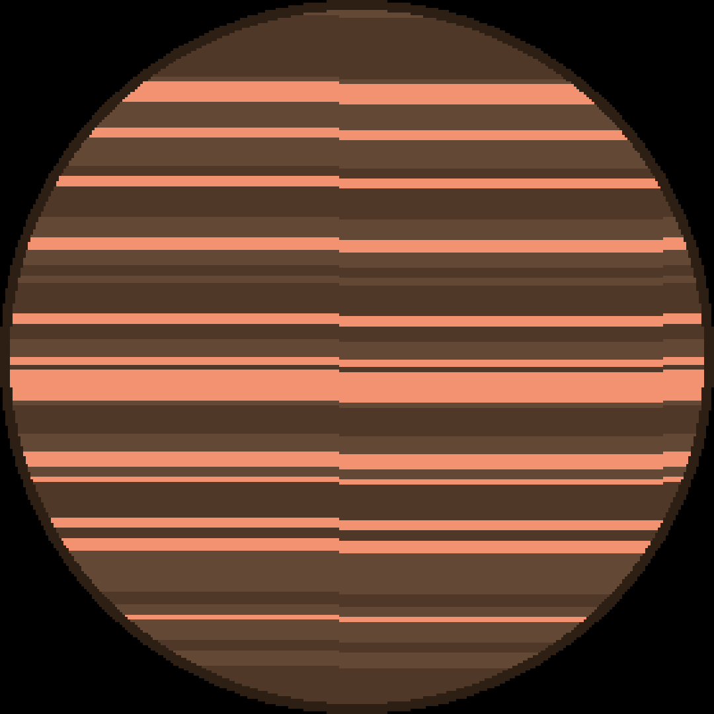

Medan andra planeter kretsar runt en eller flera stjärnor, OTS 44 kretsar inte runt någon stjärna. OTS 44 upptäcktes den 1-3 mars 1996. Det är en fritt-flytande brun-dvärg som ligger mellan 520 och 630 ljusår från jorden. En brun-dvärg är en typ av objekt i rymden som har mer massa än planeter liksom Jupiter, men inte tillräckligt mycket massa att upprätthålla kärnfusion.